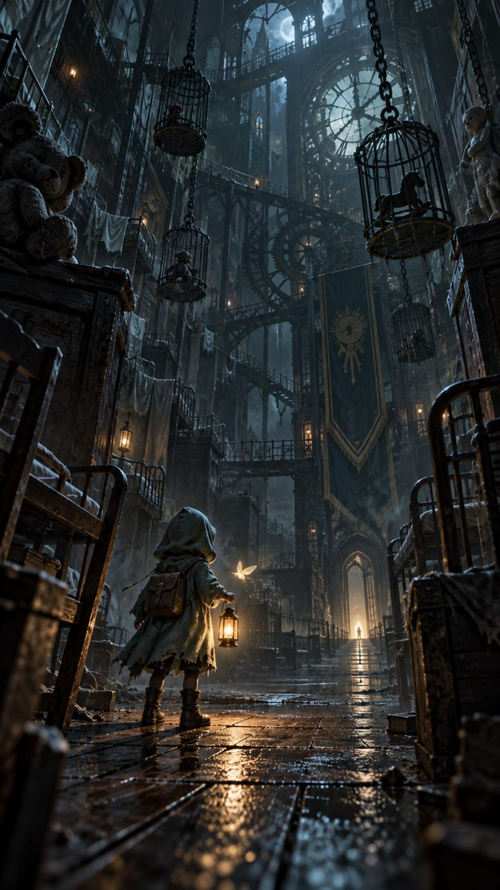

低功耗叙事模式
钟声仍在雾里回荡
你的设备暂时无法开启 3D 场景。烛蛾落在掌心，指向一扇微亮的门。
原创 · 电影式 3D 潜行冒险
雾钟孤院
穿过废弃接送站与沉默宿舍，跟随烛蛾留下的微光，唤醒三座失声钟坛。
移动 · 触碰发光物 · 阴影会保护你
雾钟孤院
勇气100
余烬0
烛蛾LV.1
当前目标
寻找散落在宿舍里的余烬
巡夜者正在凝视你
靠近发光物后点击互动
烛蛾蜕变
让这束光记住什么？
选择会永久写入本地旅程，并影响之后的路线。
旅程暂停
雾停在钟摆之间
第一章 · 钟声复苏
你让沉睡的孤院
重新记住了光
烛蛾保存了你的选择。下一次踏入迷雾，守门人的路径会改变。